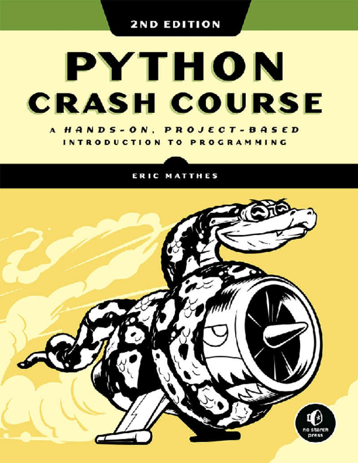
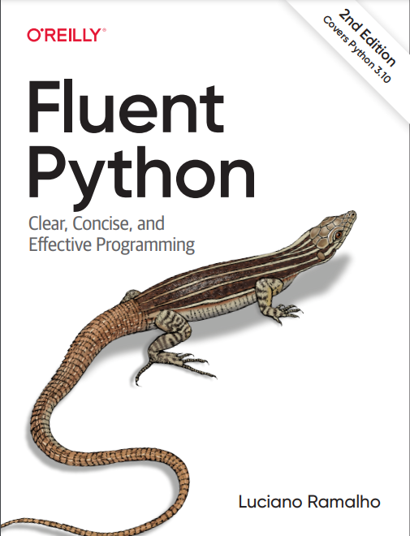
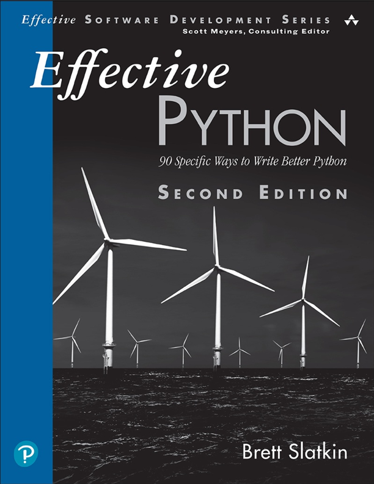

-
Python Crash Course: A Hands-On, Project-Based Introduction to Programming (2nd Edition)
This book is an immersive and comprehensive guide for beginners eager to master Python programming. It is widely regarded as an excellent starting point, begins by introducing readers to fundamental Python concepts, emphasizing clarity and hands-on learning. Throughout the text, Matthes employs a project-based approach, encouraging readers to immediately apply their knowledge through real-world examples and projects. Divided into two main sections, the first half covers essential programming concepts, including data types, control flow, functions, and classes, each explained in a clear, accessible manner that builds a solid foundation. In the second half, readers embark on three in-depth projects: building a simple 2D game, creating a data visualization application, and developing a web application. These projects reinforce earlier lessons, promoting critical thinking and problem-solving as readers work through real programming challenges. Furthermore, the book emphasizes best practices, teaching readers how to write clean, efficient, and readable code, with an entire chapter dedicated to testing and debugging. This second edition also incorporates updates to Python 3 and relevant libraries, making it an up-to-date resource in a rapidly evolving field. Through its combination of theory, application, and thoughtful pacing, "Python Crash Course" provides an engaging path for beginners to grow from novice programmers into confident, independent coders ready to take on their own Python projects.
Written by Eric Matthes

View the whole book here!
-
Fluent Python (2nd Edition)
This book is a detailed and insightful guide for experienced programmers who want to deepen their understanding of Python’s unique capabilities and leverage the language’s most effective, advanced features. This edition, thoroughly updated to reflect Python 3.9, delves into the intricacies of Python’s design philosophy, providing readers with the knowledge to write more fluent, Pythonic code. Ramalho emphasizes Python’s versatility, covering topics such as data structures, functions, object-oriented and functional programming, and concurrency. Each concept is presented with in-depth explanations, practical examples, and explorations of common Python libraries, empowering readers to use Python’s tools more effectively. Through clear examples, Ramalho shows how to simplify complex programming tasks by adopting Python’s idioms, making code more readable and efficient. He covers advanced concepts like metaprogramming, decorators, and context managers, allowing readers to gain a comprehensive understanding of how to build scalable and maintainable Python applications. The second edition also provides updated content on asynchronous programming, typing, and dynamic features, all of which are crucial in modern Python applications. Additionally, Ramalho offers insight into writing idiomatic Python code, helping programmers recognize and use patterns that make their code more intuitive and performant. Designed to expand one’s Python proficiency, "Fluent Python" balances theoretical explanations with practical exercises, ensuring readers build hands-on expertise. This book is an invaluable resource for those who already have foundational Python knowledge and are looking to maximize their capabilities, write optimized code, and understand the "Pythonic" way of thinking deeply embedded within the language’s culture and syntax.
Written by Luciano Ramalho

View the whole book here!
-
Effective Python: 90 Specific Ways to Write Better Python (2nd Edition)
As a valuable resource for Python programmers who want to refine their skills and adopt best practices in Python 3 programming, this book presents 90 specific techniques and insights into writing more readable, maintainable, and efficient Python code. This second edition is updated with the latest Python 3 features and libraries, making it an essential reference for intermediate to advanced programmers seeking to level up their Python skills. Each chapter addresses a different aspect of Python, covering topics such as data structures, functions, classes, concurrency, and metaprogramming. Slatkin uses a clear and structured approach, where each item stands on its own, presenting real-world examples that illustrate common programming challenges and solutions. Through these examples, readers can see how minor adjustments in coding style or approach can lead to significant improvements in code quality and performance. The book emphasizes the importance of Python’s idiomatic patterns, helping readers understand the "Pythonic" way of thinking, where readability and simplicity are prioritized. Additionally, Slatkin explores critical areas like asynchronous programming, typing hints, and cooperative multitasking, which have become highly relevant in Python 3. The advice within "Effective Python" is meticulously organized, with each technique thoroughly explained to show not only how to implement it but also why it makes the code better. By following Slatkin’s guidance, readers learn to write code that is optimized for performance and easy to debug, adapt, and scale. This book ultimately serves as both a guide and a reference for experienced programmers who are ready to move beyond basic Python and embrace professional-grade programming practices. "Effective Python" is a practical, insightful read that empowers developers to become more proficient in their use of Python, adopting strategies that lead to cleaner, more effective code.
Written by Brett Slatkin

View the whole book here!
Python is a popular, high-level programming language known for its simple, readable syntax and versatility. It is widely used in web development, data science, machine learning, automation, and even embedded systems. With powerful libraries like Django for web apps and TensorFlow for AI, Python supports both beginners and experts in creating everything from scripts to complex applications.
Bellow you will find some Books, aswell as some Lectures you can learn from.
Lectures
-
MIT Python course for Begginers
The first ten lectures in MIT's Introduction to Computer Science and Programming using Python introduce foundational concepts in Python programming. Starting with an overview of computation and programming, the first lecture introduces Python as a tool for problem-solving. Next, the course delves into basic programming structures, covering variables, expressions, and the significance of statements in Python. With branching and iteration, the lectures explore controlling program flow using conditions and loops, followed by an introduction to writing modular code with functions and decomposing complex tasks.
Moving deeper, lists and tuples are introduced as ways to store collections of data. Iteration concepts are expanded with more complex examples, while the importance of abstraction and modularization is highlighted to encourage clean, organized code. The focus on functions intensifies, covering advanced features like scope and lambda functions. Following this, list mutation and aliasing are explained, touching on how changes to data structures impact memory and processing. Finally, dictionaries are introduced, showing how data can be stored in key-value pairs, differentiating them from lists.
Each lecture builds on the previous one, covering key programming concepts gradually and focusing on the problem-solving and computational thinking skills essential to mastering Python.
For more details on each lecture click here
Instructor :Ana Bell
-
Python Advances Tutorials
The playlist linked appears to cover advanced Python programming topics that build on fundamental concepts to explore more specialized features and techniques. Typical topics in such playlists include working with modules like argparse for handling command-line arguments, using templates, and mastering regular expressions for text processing. You may also find sections on memory management, optimizing code, and implementing complex data structures.
In addition to these core areas, advanced Python playlists often dive into functional programming paradigms, decorators, context managers, and handling concurrent programming with threads and async functions. These tutorials aim to equip users with tools to create more efficient, scalable, and modular applications in Python.
Authors: NeuralNine
For more details on each lecture click here
-
Expert Python Tutorials
Intermediate Python programming concepts designed for those who have a foundational understanding of Python and want to deepen their skills. Topics typically include working with advanced data structures, understanding object-oriented principles in depth, mastering file handling, and exploring Pythons powerful standard libraries.
Additional concepts often found in intermediate tutorials include the use of lambda functions, comprehensions (both list and dictionary comprehensions), decorators, and error handling. Some playlists may also cover practical applications, like data manipulation using libraries such as pandas, as well as networking and web scraping. This level aims to strengthen your ability to write more efficient, modular, and robust code.
Authors: Tech with Tim
For more details on each lecture click here